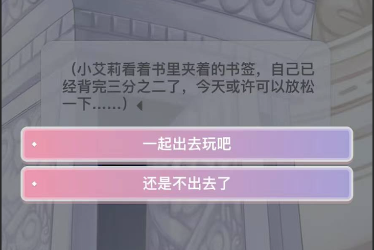

Post 3: Comparative Analysis
For my interactive narrative project, Where Should My Phone Sleep Tonight?, my goal is to create a story where both my phone and I try to have a “peaceful night.” However, every choice leads to anxiety, insomnia, or unexpected consequences. The overall tone is dark humor, and there is no perfect ending. I want users to experience the feeling of control slowly slipping away through small daily decisions.

Inspiration link: Miracle Nikki
Credit: interface by Miracle Nikki, Inc. Screenshot captured by me for educational analysis.
One of my inspirations is Miracle Nikki (also known as Love Nikki), a dress-up mobile game where players choose clothing pieces to influence the outcome of each level. Although it is often described as a fashion game, it is also about strategy and replay. Each stage allows players to retry and improve their choices. Visually, the game does not rely on complex 3D modeling. The background, character, and UI feel like separate layers, almost like flat cut-outs. This layered, non-realistic visual style is something I want to apply to my project. It is achievable with HTML and CSS and does not require advanced animation.
In terms of visual design, I want to create a layered, non-realistic style that emphasizes the surreal and absurd nature of the story. The interface will be simple, with a background scene and clear options at the bottom. Each choice will lead to a new screen with its own visual style, reflecting the consequences of that decision. For example, if the phone gets wet, the next screen may show a dark, blurry image with text overlay describing the situation.
Inspiration link: Duolingo
Credit: Duolingo interface by Duolingo, Inc. Screenshot captured by me for educational analysis.
Another interface inspiration comes from mobile apps like Duolingo. The interaction is simple: a background scene with clear options placed at the bottom. The choices are short and readable. This simplicity makes interaction intuitive and reduces cognitive overload. I want to design my story similarly, with a game-like scene and buttons at the bottom for each choice.
In my project, each ending will be its own page. Some endings will unlock a “second night.” For example, if the phone gets wet, the next screen may offer new options such as repairing it or buying a new one. Repeated bad choices may remove certain options entirely. I will design the first scene in warm yellow tones, while failure screens will fade into dark gradients with text overlays. The entire project will be built using Figma and HTML, focusing on structure rather than complex animation.